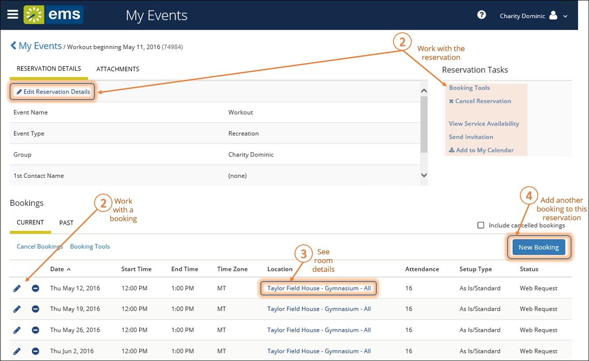

TIP: EMS only returns search results that contain the exact order of the characters in your search string, but EMS does not care about if your search string is uppercase or lowercase. In addition, EMS will return search results that contain your search string regardless of where those characters appear. For example, a search string of ed returns the College of Education Seminar, Ed Smith fundraiser, Health Center Education Training, and so on.
NOTE: The BROWSE > EVENTS menu option shows all of your reservations, as well as all reservations that you are authorized to view. The MY EVENTS menu option shows the reservations you have created. It will not display reservations to which you have been invited.
